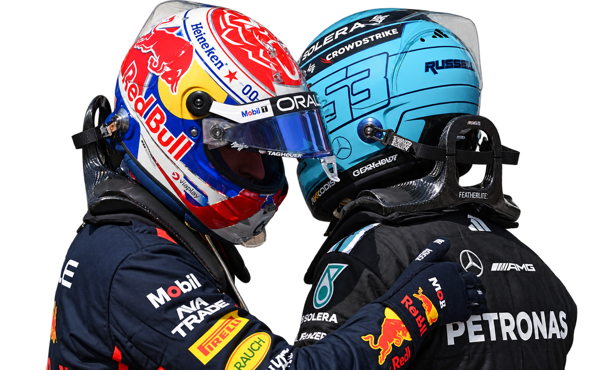
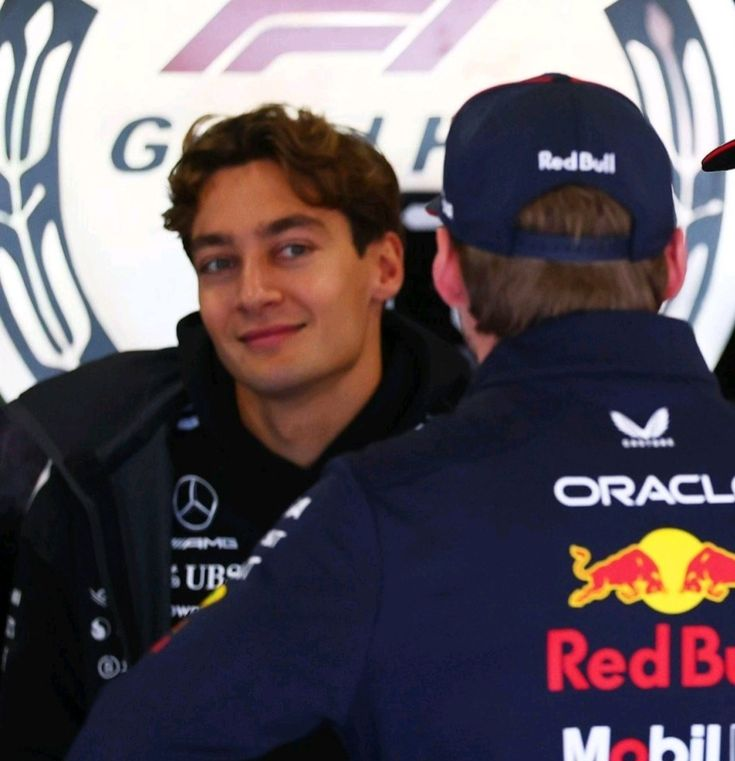
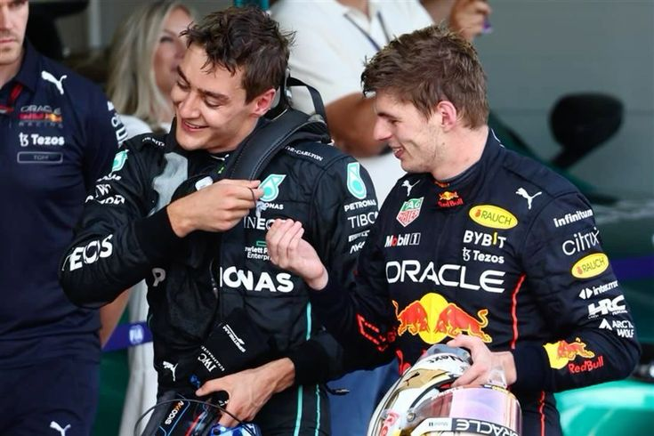
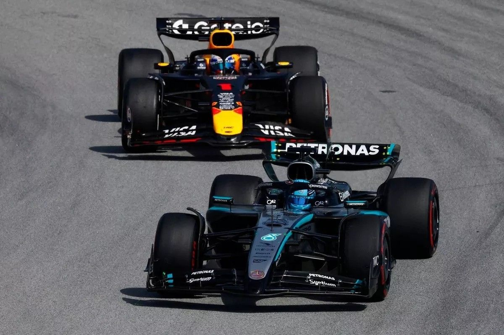
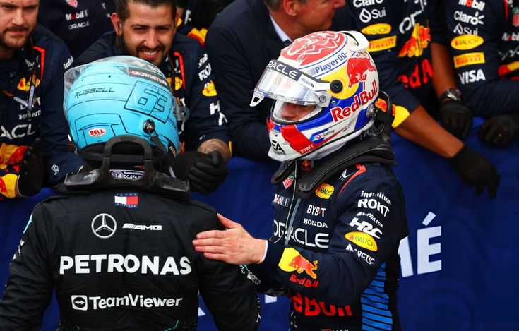

YEARS
DAYS
HOURS
MIN
SEC


Y decir “todavía” me parece extraño porque puede sonar como si estuviera sorprendido de que después de dos años siga sintiéndolo, pero creo que en realidad estoy sorprendido por la forma en la que lo siento. Porque no te amo igual que hace dos años. Te amo ahora que te conozco más.
Ahora sé más cosas de ti. Sé cosas bonitas y cosas que a veces me desesperan. He conocido versiones tuyas felices, tristes, molestas, cansadas, cariñosas, distantes, emocionadas. Te he visto en días buenos y en días en los que ninguna de las dos sabía muy bien qué hacer. Y aun así eres tú. Supongo que eso es lo extraño. Después de todo, sigues siendo tú.
Hay algo en amarte que todavía no consigo entender completamente.


